进程管理
一、性能分析命令
内存性能分析
free
free 命令用于显示Linux系统上的内存使用情况。它提供了有关物理内存（RAM）和交换空间（swap）的信息，包括已使用、空闲、缓冲区和缓存内存等
1 | -b 以字节为单位 |
缓冲区（buffers）是操作系统用来临时存储I/O数据的内存区域。例如，当读写文件时，内核会将磁盘上的数据暂时存放在缓冲区内，然后再批量写，以减少磁盘碎片和硬盘反复寻道，快速处理后续的I/O请求。这样可以提高系统性能，减少对磁盘的直接访问，主要用于硬盘与内存之间的数据交互，缓存(cached) 是指文件的内容要被多个进程使用的时候，则可以将内容放入缓存区，则后续就可以直接从内存中读，而不用再消耗IO
缓存（cache）主要指的是页面缓存或文件缓存。这部分内存用来存储最近访问过的文件内容，使得再次访问同一文件时能更快地从内存而不是硬盘中读取数据。还包括inode缓存等内核用于加速文件系统操作的数据结构，主要作用于CPU和内存之间的数据交互（本来要用IO读硬盘文件，现在变成了读内存）
向/proc/sys/vm/drop_caches中写入相应的修改值，会清理缓存。建议先执行sync（sync 命令将所有未写的系统缓冲区写到磁盘中，包含已修改的 i-node、已延迟的块 I/O 和读写映射文件）。执行echo1、2、3 至 /proc/sys/vm/drop_caches, 达到不同的清理目的
如果因为是应用会存在像内存泄露、溢出的问题时，从swap的使用情况是可以比较快速可以判断的，但通过执行free 反而比较难查看。但核心并不会因为内存泄露等问题并没有快速清空buffer或cache（默认值是0），生产也不应该随便去改变此值。
一般情况下，应用在系统上稳定运行了，free值也会保持在一个稳定值的。当发生内存不足、应用获取不到可用内存、出现OOM错误等问题时，还是更应该去分析应用方面的原因，否则，清空buffer，强制腾出free的大小，可能只是把问题给暂时屏蔽了。
排除内存不足的情况外，除非是在软件开发阶段，需要临时清掉buffer，以判断应用的内存使用情况；或应用已经不再提供支持，即使应用对内存的时候确实有问题，而且无法避免的情况下，才考虑定时清空buffer。
1 | [root@ubuntu2004 ~]#free -h |
字段说明
total：物理内存的总量，包括实际可用内存和内核保留的内存
used：已使用的物理内存量，包括用于进程和系统的内存
free：空闲的物理内存量，尚未分配给任何进程
- 当前完全没有被程序使用的内存
shared：被共享的内存量，通常用于共享内存段的进程（如进程间通信机制），即多个进程共享的内存
buff/cache：用于缓冲区和缓存的内存量。这包括Linux内核用于缓存文件系统数据的内存，以及用于文件I/O的内存缓冲区
- cache在有需要时，是可以被释放出来以供其它进程使用的（当然，并不是所有cache都可以释放，比如当前被用作ramfs的内存）
available：可用内存量，表示系统当前可供新进程使用的内存，包括缓冲区和缓存，buffer、cache可以释放大部分，所以这里近似等于 free+buffer/cache的大小
- 真正表明系统目前可以提供给新启动的应用程序使用的内存
Mem：物理内存的相关信息，包括总内存空间、使用、剩余等相关信息。
Swap：交换空间的信息，包括总交换空间、已使用的交换空间和空闲交换空间。
公式
1 | used = total - free - buffers - cache |
buffers/cached不是100%都能释放出来使用的，“可用内存”其实就是个近似值。新版本系统的输出中有一个available项目表示可用内存，值小于 free + buff/cache，内核 3.14 之后支持该特性（虽然也不是绝对意义上的精确的可用内存大小，囧）。
Linux 2.4.10 内核之前，磁盘的缓存有两种，即 Buffer Cache和 Page Cache。前者缓存管理磁盘文件系统时读取的块，后者存放访问具体文件内容时生成的页。在 2.4.10 之后，Buffer Cache这个概念就不存在了，这些数据被放在Page Cache中（这种 Page 被称为 Buffer Pages）。
简而言之，现在磁盘的 cache 只有 Page Cache 一种，在Page Cache 中，有一种Page叫Buffer Page ，这种Page都与一个叫buffer_head的数据结构关联，这些页也就在内存统计中用buffers这个指标来单独统计了。
范例: 清理缓存
1 | [root@centos8 ~]#cat /proc/sys/vm/drop_caches |
smem
smem 是一个用于查看 Linux 系统中进程内存使用情况的工具。它提供了详细的内存统计信息，包括物理内存、虚拟内存、共享内存、缓冲区和缓存等各种内存指标。smem 命令的功能比标准的 ps 或 top 命令更加详细，可以帮助我们更好地了解各个进程占用内存的情况。
该命令需要额外安装，具体安装方式如下：
1 | yum install -y epel* # 需安装扩展源（因为本地软件仓库中没有找到smem软件包）或下载源码进行编译安装 |
语法
1 | smem [选项] |
字段输出解释：
PID：进程ID。
User：进程所属用户。
Command：进程的命令行。
Swap：进程占用的交换空间。
USS：唯一内存使用（Unique Set Size），表示进程独占的内存。只计算进程独自占用的内存大小,不包含任何共享的部分
PSS：共享内存使用（Proportional Set Size），表示进程独占内存加上共享内存的平均值。
RSS：物理内存使用（Resident Set Size），表示进程当前实际占用的物理内存。
默认情况下，smem 命令以物理内存（RES）的信息排序，并显示前10个进程。
不添加任何选项
smem
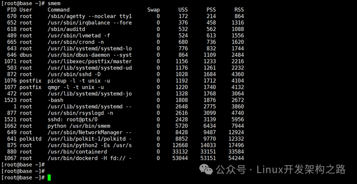
显示内存单位并指定字段进行排序
1 | smem -k -s uss |
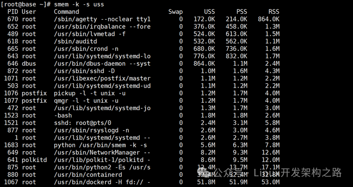
以百分比显示并指定字段进行排序
1 | smem -p -s uss |
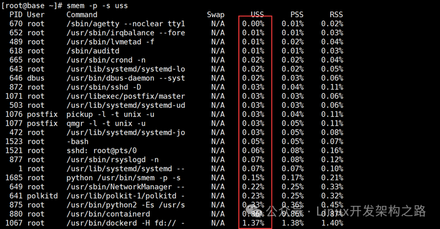
查看每个用户使用内存的情况
smem -u
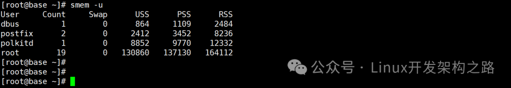
查看指定进程使用系统内存的情况
1 | smem -k -P dockerd |
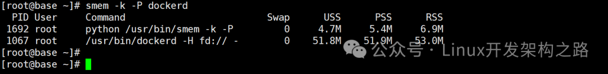
虚拟内存信息 vmstat
用于监控系统性能和虚拟内存统计的命令。它提供了关于CPU、内存、磁盘I/O和系统上下文切换等方面的信息。
虚拟内存
虚拟内存是操作系统提供的一种内存管理技术，操作系统会为每个进程分配一套独立的，连续的，私有的内存空间，让每个程序都以为自己独享所有主存的错觉，这样做的目的是方便内存管理。
程序所使用的内存是虚拟内存
CPU使用的内存是物理内存 MMU LTB
虚拟内存地址和物理内存地址之间的映射和转换由CPU中的内存管理单元(MMU)进行管理
1 | [root@centos ~]#vmstat |
字段说明
procs：显示队列和等待状态
r 列：表示运行队列中的进程数，即当前正在运行的进程数。如果这个值长期大于系统 CPU 个数，说明 CPU 紧张，需进行 CPU 升级（即增加系统 CPU）。
b 列：表示在等待资源的进程数，即处于不可中断（blocked）状态的进程数，通常是等待 I/O、内存交换完成的进程数。由于硬盘速度特别慢而导致内存同步的时候没成功，那么现在告诉程序，说你先不要产生数据，这就是阻塞 b越大证明硬盘压力很大
memory：显示物理内存状态
swpd 列：表示交换（swap）的虚拟内存使用量，表示从实际物理内存已经交换到交换空间的数据量，我这里的值为 0，因为我压根就没有启用 Swap Space。如果你启用了交换空间，发现swpd 列下的值很大，只要 swap 字段下的 si、so 列的值长期为 0，这也不会影响系统性能。
free 列：表示当前可用的空闲物理内存。
buff 列：Buffers Cache，表示内存缓冲区缓存的数据量，一般对块设备的读写才需要缓冲（即通常用于文件I/O缓存）。
cache 列：Page Cache，表示内存的页高速缓存的数据量，一般作为文件系统的缓存（即通常用于文件系统缓存），频繁访问的文件都会被缓存，如果 cache 列的值比较大，说明页缓存的文件数较多，如果此时 io 字段中的 bi 列的值较小，说明文件系统效率较好。
swap：显示交换分区读写情况
si 列：表示每秒从磁盘（即交换空间）交换到内存的数据量（swap in)（单位KB/s），内存进，从swap出。
so 列：表示每秒从内存交换到磁盘（即交换空间）的数据量（swap out）（单位KB/s），内存出，进到swap里面，腾出内存空间运行应用程序。
说明：如果 si、so 长期不为 0，那我们的 Linux 系统的物理内存资源肯定不足了。为什么呢？你想一想，根据内存的相关机制，我们知道长期不为 0，说明数据频繁地在物理内存和交换空间中交换数据，如：需要使用内存的进程会在内存中运行，然后内存会将不常用的文件数据交换到 Swap Space，这样的话 si、so 值势必是不会为 0 的，而且会存在频繁波动。如果发现si、so里面有数据，说明内存可能不够用了
io：显示磁盘读写情况
bi 列：表示每秒从块设备（磁盘）读取的块数量（blocks in）（单位KB/s），从块设备读入数据到系统的速率(kb/s)，进内存。
bo 列：表示每秒写入块设备（磁盘）的块数量（blocks out）（单位KB/s），保存数据至块设备的速率，出内存
说明：如果 bi + bo 的值大于 1000KB/s，且 wa 值较大，则表示系统磁盘 I/O 有瓶颈，应该提高磁盘的读写性能。
system：显示采集间隔内发生的中断数
in 列：每秒中断的数量，包括时钟中断、网络中断等。
cs 列：每秒上下文切换的数量，包括进程切换和内核线程切换。
说明：如果这两个值越大，说明内核消耗的 CPU 时间会越多。
cpu：显示 CPU 的使用状态
us 列：用户空间占用CPU时间的百分比。如果长期大于 50%，就需要考虑优化程序或算法。
sy 列：内核空间占用CPU时间的百分比。如果 us + sy 长期大于 80%，说明 CPU 资源不足。
id 列：CPU空闲时间的百分比。
wa 列：等待 I/O 完成的CPU时间的百分比。wa 越高说明 IO 等待越严重，一般如果 wa 超过 20%，说明 IO 等待严重（可能是因为磁盘大量的随机读写造成）。
st 列：用于虚拟机监控程序（hypervisor）的CPU时间的百分比（仅在虚拟化环境中可见）
选项
1 | -a #分开显示活动和非活动内存 |
范例
1 | #每秒显示一次 |
范例
1 | # vmstat -1 |
CPU性能分析
负载查询 uptime
/proc/uptime 包括两个值，单位 s
系统启动时长
空闲进程的总时长（按总的CPU核数计算）uptime 和 w 显示以下内容
当前时间
系统已启动的时间
当前上线人数
系统平均负载（1、5、15分钟的平均负载，一般不会超过1，超过5时建议警报，15分钟的平均CPU负载，数字越小越好）
系统平均负载: 指在特定时间间隔内运行队列中的平均进程数,通常每个CPU内核的当前活动进程数不大于3，那么系统的性能良好。如果每个CPU内核的任务数大于5，那么此主机的性能有严重问题
负载是指等待CPU资源的进程数量，所以这三个负载值一般不要长期超过系统的 CPU 核数，否则负载较高，影响系统性能（但不是绝对的，偶尔大于系统 CPU 核数也是每问题的）。
如：linux主机是1个双核CPU，当Load Average 为6的时候说明机器已经被充分使用
1 | [root@centos8 ~]#uptime |
显示CPU相关统计 mpstat
mpstat 是 Multiprocessor Statistics（即多处理器统计），它用于显示多核CPU系统中每个CPU核心的性能统计信息。这个命令可以帮助系统管理员监控和分析系统的CPU使用情况，尤其是在多核 CPU 的环境中。一般地，有些 Linux 发行版默认没有安装次工具，需我们手动安装。来自于sysstat包
该命令与 vmstat 命令类似，mpstat 是通过 /proc/stat 里面的状态信息进行统计的，mpstat 的好处在于，它可以查看多核 CPU 中每个 CPU 计算核的统计数据的情况，而 vmstat 只能查看系统整体 CPU 的情况。
1 | [root@centos ~]#mpstat |
字段输出解释：
Linux 3.10.0-1160.el7.x86_64 (centos)：显示操作系统版本和主机名。
09/16/2023：显示当前日期。
x86_64：显示系统架构（在此示例中为x86_64，表示64位系统）。
(2 CPU)：显示 CPU 核心数量，本例中有 2 个CPU核心。
04:49:20 PM：显示统计信息的时间戳。
CPU：处理器的 ID 号，采集时不指定则默认为系统整体 CPU 情况（all 表示系统整体 CPU 情况，其他如 CPU 0、CPU 1 等）。
%usr：用户空间占用 CPU 时间的百分比。
%nice：优先级较高的用户空间占用 CPU 时间的百分比。
%sys：内核空间占用 CPU 时间的百分比。
%iowait：CPU 等待 I/O 操作完成的百分比。涉及到磁盘的IO或者网络的IO，值过大说明磁盘和网络的性能较差
%irq：CPU 处理硬件中断的百分比。
%soft：CPU 处理软件中断的百分比。
%steal：CPU 被虚拟机监控程序（hypervisor）”偷取”的百分比，即被嵌套虚拟机跑进程所使用的时间
%guest：运行虚拟机中的操作系统时，CPU花费在虚拟机中的百分比，即运行虚拟化主机cpu自身时间的占比
%gnice：虚拟机中运行的优先级较高的用户空间占用CPU时间的百分比，即运行虚拟cpu上的nice 进程的占比
%idle：CPU空闲时间的百分比，值越高，CPU利用率越低
Average：平均值，如果指定了采集次数，系统为自动为我们计算出相关字段的平均值。
磁盘IO性能分析
统计CPU和设备IO信息 iostat
iostat 命令是用于监视 Linux 系统中磁盘和 CPU 使用情况的命令行工具。它可以提供有关系统的磁盘 I/O 和 CPU 使用的详细统计信息
此工具由sysstat包提供
1 | 常用选项: |
范例
1 | [root@centos8 ~]#iostat |
字段说明
%usr：用户空间进程占用的CPU
%nice：调整优先级占用的CPU
%system：内核空间进程占用的CPU
%iowait：等待IO，涉及到磁盘的IO或者网络的IO，值过大说明磁盘和网络的性能较差
%steal：被嵌套虚拟机跑进程所使用的时间
%idle：空闲值，值越高，CPU利用率越低
Device：磁盘设备的名称，表示正在监视的磁盘或分区。
tps：每秒传输的 I/O 操作次数。这个值表示每秒完成的读取和写入磁盘的总操作数，即该设备每秒的传输次数，”一次传输”意思是”一次I/O请求”。多个逻辑请求可能会被合并为”一次I/O请求”。”一次传输”请求的大小是未知的
kB_read/s：每秒从磁盘读取的数据量。这个值表示每秒从磁盘读取的数据量，以千字节（KB）为单位。
kB_wrtn/s：每秒写入磁盘的数据量。这个值表示每秒写入磁盘的数据量，以千字节（KB）为单位。
kB_read：自系统启动以来从磁盘读取的总数据量。这个值表示自系统启动以来累积的总读取数据量，以千字节（KB）为单位。
kB_wrtn：自系统启动以来写入磁盘的总数据量。这个值表示自系统启动以来累积的总写入数据量，以千字节（KB）为单位。
范例
1 | [root@centos8 ~]#iostat -d sda 1 3 -x |
字段说明
r/s: 每秒合并后读的请求数
w/s: 每秒合并后写的请求数
rsec/s：每秒读取的扇区数
wsec/：每秒写入的扇区数
rKB/s：每秒向设备发出的读取请求数
wKB/s：每秒向设备发出的写入请求数
rrqm/s：每秒这个设备相关的读取请求有多少被合并了（当系统调用需要读取数据的时候，VFS将请求发到各个FS，如果FS发现不同的读取请求读取的是相同块的数据，FS会将这个请求合并）
wrqm/s：每秒这个设备相关的写入请求有多少被合并了
%rrqm: 读取请求在发送到设备之前合并在一起的百分比
%wrqm: 写入请求在发送到设备之前合并在一起的百分比
avgrq-sz：平均请求扇区的大小
avgqu-sz：是平均请求队列的长度。毫无疑问，队列长度越短越好
await：每一个IO请求的处理的平均时间（单位是微秒毫秒）。这里可以理解为IO的响应时间，一般地系统IO响应时间应该低于5ms，如果大于10ms就比较大了。这个时间包括了队列时间和服务时间，也就是说，一般情况下，await大于svctm，它们的差值越小，则说明队列时间越短，反之差值越大，队列时间越长，说明系统出了问题。
svctm：表示平均每次设备I/O操作的服务时间（以毫秒为单位）。如果svctm的值与await很接近，表示几乎没有I/O等待，磁盘性能很好，如果await的值远高于svctm的值，则表示I/O队列等待太长，系统上运行的应用程序将变慢。
%util：在统计时间内所有处理IO时间，除以总共统计时间。例如，如果统计间隔1秒，该设备有0.8秒在处理IO，而0.2秒闲置，那么该设备的%util = 0.8/1 = 80%，所以该参数暗示了设备的繁忙程度。一般地，如果该参数是100%表示设备已经接近满负荷运行了（当然如果是多磁盘，即使%util是100%，因为磁盘的并发能力，所以磁盘使用未必就到了瓶颈）。
监视磁盘I/O iotop
来自于iotop包
iotop命令是一个用来监视磁盘I/O使用状况的top类工具，iotop具有与top相似的UI，其中包括PID、用户、I/O、进程等相关信息，可查看查看哪些进程正在读取或写入磁盘，可定位哪个进程消耗IO的时间最长
1 | [root@centos8 ~]#iotop |
字段输出解释：
TID：线程或进程的唯一标识符（Thread/Task ID），表示正在进行磁盘 I/O 操作的进程或线程的ID。
PRIO：进程的优先级（Priority），通常用于指示进程的执行优先级。
USER：执行磁盘 I/O 操作的用户的用户名。
DISK READ：磁盘读取速率，表示进程正在从磁盘读取数据的速度。以字节/秒（Bytes per Second）为单位显示。
DISK WRITE：磁盘写入速率，表示进程正在向磁盘写入数据的速度。以字节/秒为单位显示。
SWAPIN：表示进程从交换空间中读取数据的速率，通常用于虚拟内存操作。以字节/秒为单位显示。
IO>：磁盘 I/O 操作的总和，包括读取和写入。以百分比形式表示，表示磁盘 I/O 占用的总带宽。
COMMAND：正在进行磁盘 I/O 操作的进程或线程的命令名称。
iotop常用参数
1 | -o #只显示正在产生I/O的进程或线程，除了传参，可以在运行过程中按o生效 |
交互按键
1 | left和right方向键：改变排序 |
网络性能分析
显示网络带宽使用情况 iftop和ethtool
通过EPEL源的 iftop 包
可以看到机器和哪个远程主机的网络带宽占用比较高
选项
1 | -h #显示帮助 |
范例
1 | [root@centos8 ~]#iftop -ni eth0 |
ethtool可以看到总带宽
1 | [root@rocky8 ~]#ethtool eth0 |
查看网络实时吞吐量 nload
nload 是一个实时监控网络流量和带宽使用情况，以数值和动态图展示进出的流量情况,通过EPEL源安装
选项
1 | -m #显示所有设备 |
字段说明
1 | Curr #当前流量 |
界面操作
1 | 上下方向键、左右方向键、enter键或者tab键都就可以切换查看多个网卡的流量情况 |
范例
1 | #查看所有网络设备进出流量，第一页显于一个设备 |
查看进程网络带宽的使用情况 nethogs
NetHogs是一个开源的命令行工具（类似于Linux的top命令），用来按进程或程序实时统计网络带宽使用率
红帽系统的nethogs包来自于EPEL源
选项
1 | -d #数据刷新时间间隔，默认1秒 |
交互式命令
1 | q #退出 |
范例
1 | #默认 |
网络监视工具iptraf-ng
来自于iptraf-ng包,可以进网络进行监控,对终端窗口大小有要求
选项
1 | -i <iface> #指定网络设备，默认所有 |
范例
1 | #对终端窗口大小有要求,如果太小否则无法显示 |
二、进程管理命令
查看进程相关信息
linux启动的第一个进程是0号进程，是静态创建的
在0号进程启动后会接连创建两个进程，分别是1号进程和2和进程。
1号进程最终会去调用可init可执行文件，init进程最终会去创建所有的应用进程。
2号进程会在内核中负责创建所有的内核线程
所以说0号进程是1号和2号进程的父进程；1号进程是所有用户态进程的父进程；2号进程是所有内核线程的父进程。
进程树pstree
pstree 可以用来显示进程的父子关系，以树形结构显示
1 | pstree [OPTION] [ PID | USER ] |
范例
1 | #高亮显示前辈进程 |
进程信息 ps
可以进程当前状态的快照，默认显示当前终端中的进程，Linux系统各进程的相关信息均保存在/proc/PID目录下的各文件中
1 | ps [OPTION]... |
ps 输出属性
1 | USER(UID)：进程属主 |
常用组合
1 | aux |
范例
1 | #查看进程详细信息 |
范例：有效用户和实际用户
1 | [wang@centos8 ~]$passwd |
范例
1 | #查询你拥有的所有进程 |
范例：查看优先级和CPU绑定关系
1 | [root@centos8 ~]#ps axo pid,cmd,ni,pri,psr,rtprio |grep migration |
查看进程信息 prtstat
可以显示进程信息,来自于psmisc包
1 | prtstat [options] PID ... |
搜索进程
按条件搜索进程
ps 选项 | grep ‘pattern’ 灵活
pgrep 按预定义的模式
/sbin/pidof 按确切的程序名称查看pid
pgrep
1 | pgrep [options] pattern |
范例
1 | [root@centos8 ~]#pgrep -u wang |
范例：发起用户和生效用户
1 | #普通用户发起passwd 进程 |
pidof
查看相关命令的进程编号
1 | pidof [options] [program [...]] |
查看进程实时状态
top
top 命令是一个用于实时监视 Linux 系统中进程的命令行工具，它提供了有关系统性能和进程活动的实时信息。它没有参数，直接运行它将显示实时的系统性能信息和进程列表。默认情况下，top会按CPU利用率降序排列进程。
top命令统计的cpu状态信息就是从/proc/stat中取的，系统所有进程的运行状态都在/proc下
cpu：/proc/cpuinfo
内存：/proc/meminfo
内核启动参数：/proc/cmdline
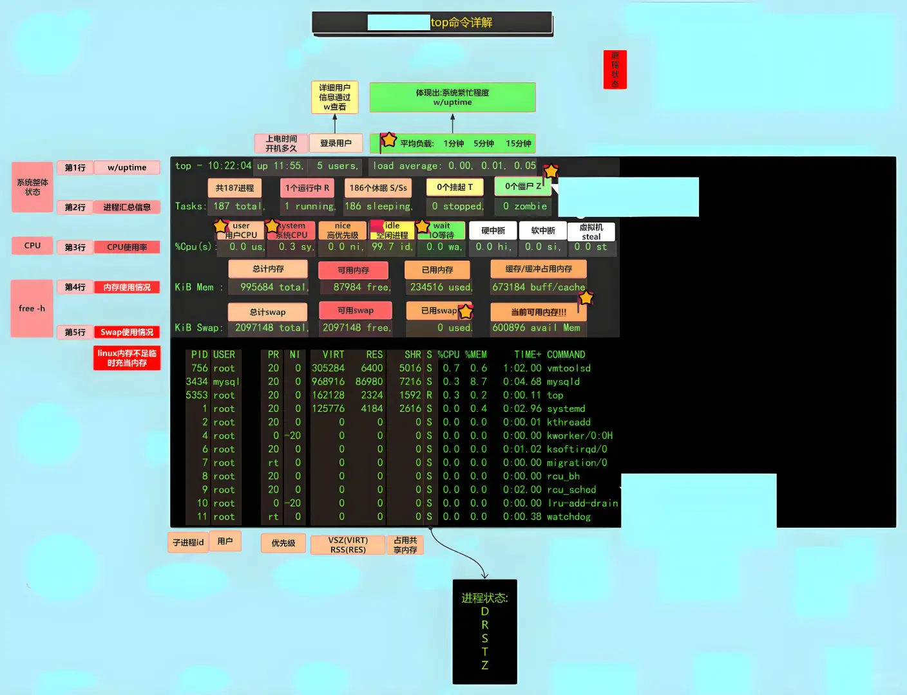
1 | 内核空间进程占用的CPU；[root@centos ~]#top |
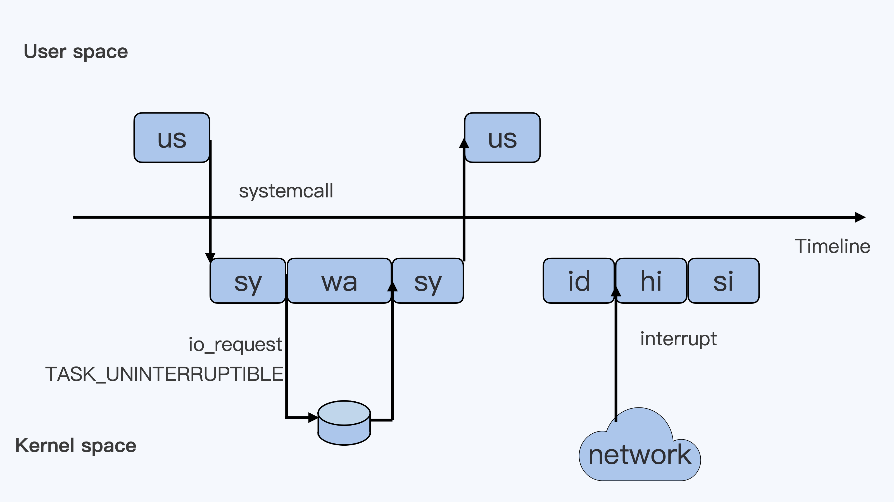
为了便于理解，假设只有一个cpu，按照从上到下从左到右的顺序以此解析每个框的含义
- 第一个框us：一个用户程序开始运行，那么就对应于着第一个“us”框，代表linux用户态的Cpu Usage。普通的用户程序代码中，只要不是调用系统调用（System Call），这些代码的指令消耗的CPU就都属于“us”。
- 第二个框sys：当这个用户程序代码调用了系统调用，比如read()去读取一个文件，这时候这个用户的进程就会从用户态切换到内核态。内核态read()系统调用在读到真正disk上的文件前，就会进行一些文件系统层的操作，那么这些代码指令的消耗就属于“sys”，代表内核cpu使用
- 第三个框wa：接下来，这个read()系统调用会向linux的Block Layer发出一个I/O Request,触发一个真正的磁盘读取操作，此时，这个进程一般会被置为不可中断睡眠状态TASK_UNINTERUPTIBLE。而linux会把这段时间标识成“wa”，
- 第四个框sys：紧接着，当磁盘返回数据时，进程在内核态拿到数据，这里仍旧是内核态CPU使用中的“sy”
- 第五个框us：然后进程再从内核态切回用户态，在用户态得到文件数据，这里进程又回到用户态CPU使用，即“us”
- 第六个框id：好，在这里我们假设一下，这个用户进程在读取数据之后，没事可做就休眠了，并且假设此时在这个CPU上也没有其他需要运行的进程了，那么系统就会进入“id”这个步骤，代表系统处于空闲状态
- 第七个框hi：如果此时这台机器收到一个网络包，网卡就会发出一个中断（interrupt），该中断为硬中断，cpu必须响应，cpu响应后进入中断服务程序，此时cpu就会进入“hi”，代表cpu处理硬中断的开销。
- 第八个框si：由于我们的中断服务需要关闭中断，所以这个硬中断的时间不能太长。但发生中断之后的工作是必须要完成的，如果这些工作比较耗时怎么办？linux中有一个软中断的概念（softirq），它可以完成这些耗时比较长的工作。从网卡收到的数据包的大部分工作，都是通过软中断来最终处理的。
- 强调：无论是hi还是si，占用的cpu时间，都不会计入进程的cpu时间，因为本来中断程序就是单独的程序，它们在处理时本就不属于任何一个进程。
- 此外还有两个类型的cpu：一个是“ni”，另外一个是“st”
- “ni”是nice的缩写，这里表示如果进程的nice值是正值（1-19），代表优先级比较低的进程运行时所占用的cpu
- “st”是steal的缩写，是虚拟机里用的cpu使用类型，表示有多少时间是被同一个宿主机上的其他虚拟机抢走的
强调：无论是hi还是si，占用的cpu时间，都不会计入进程的cpu时间，因为本来中断程序就是单独的程序，它们在处理时本就不属于任何一个进程，即不属于用户态也不属于内核态，因此cgroup不会限制它们
交互环境下子命令
1 | 帮助：h 或 ？ ，按 q 或esc 退出帮助 |
快捷键
1 | #h：获取帮助 |
选项
1 | -d #指定刷新时间间隔，默认为3秒 |
示例
1 | top -H -p `pidof mysqld` |
范例
1 | #10s刷新一次 |
htop
centos来自EPEL源，比top功能更强，ubuntu 中可以直接安装
选项
1 | -d #: 指定延迟时间； |
子命令
1 | s：跟踪选定进程的系统调用 |
语法
1 | htop |
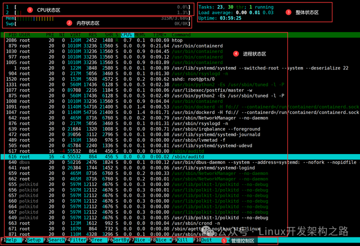
如何自定义显示字段？
- 设置（F2）
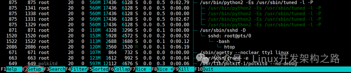
- 选择 Columns 字段，并按照下图添加即可，最右边的列为可选列
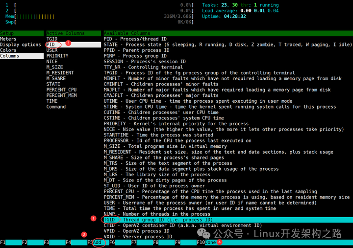
- 此时你会发现已经添加完成了
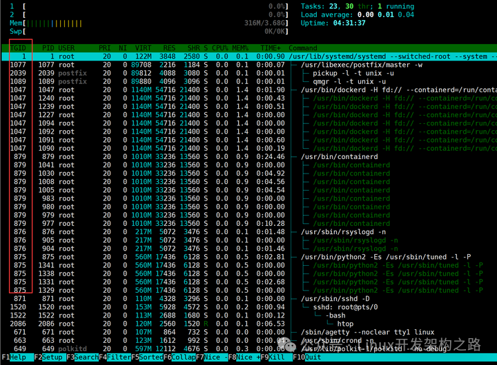
上图可分为 5 大区：
- CPU 状态区
展示每个每个 CPU 逻辑核的使用百分比，并通过不同颜色条进行区分，蓝色表示 low-prority 使用，绿色表示 normal 使用情况，红色表示 Kernel 使用情况，青色表示 vistualiz 使用情况，上图案例中共有 2 个逻辑核。
- 内存状态区
展示物理内存和 Swap Space 的状态，同样也使用不同的颜色条来区分，其中绿色表示已使用内存情况，蓝色表示用于缓冲的内存情况，黄色表示用于缓存的内存情况。
- 整体状态区
Task 表示当前系统进程总数和当前正在运行的进程数；
Load average 表示过去 1、5、15 分钟的系统平均负载；
Uptime 表示系统运行时长。
- 进程状态区
PID：进程 ID（Process ID），表示每个正在运行的进程的唯一标识符。
USER：进程的所有者（用户），显示启动进程的用户帐户。
PRI：进程的优先级（Priority），通常是一个负整数。较低的数值表示更高的优先级。
NI：进程的 Nice 值（Nice Value），用于调整进程的优先级。负值表示较高的优先级，正值表示较低的优先级。
VIRT：虚拟内存大小（Virtual Memory），表示进程已分配但未必使用的虚拟内存大小，以千字节（KB）为单位。
RES：常驻内存大小（Resident Set Size），表示进程实际占用的物理内存大小，以千字节（KB）为单位。
SHR：共享内存大小（Shared Memory），表示多个进程之间共享的内存大小，以千字节（KB）为单位。
S：进程的状态，可以是以下之一：
R：运行中（Running）
S：睡眠中（Sleeping）
D：不可中断的休眠状态（Uninterruptible Sleep）
Z：僵尸进程（Zombie）
T：已停止（Stopped）
t：跟踪/停止（Tracing/Stopped）
W：等待内存交换（Paging）
X：死掉（Dead）
K：内核线程（Kernel Thread）
%CPU：进程的 CPU 利用率，表示进程使用 CPU 的百分比。
%MEM：进程的内存使用率，表示进程使用系统内存的百分比。
TIME+：进程已运行的累计 CPU 时间，以小时:分钟:秒的格式表示。
COMMAND：进程的命令名称，显示启动进程的完整命令。
查看进程打开文件 lsof
查看当前系统文件的工具。在linux环境下，一切皆文件，用户通过文件不仅可以访问常规数据，还可以访问网络连接和硬件如传输控制协议 (TCP) 和用户数据报协议 (UDP)套接字等，系统在后台都为该应用程序分配了一个文件描述符
lsof使用注意事项
需要root权限才能使用lsof命令。
lsof命令需要一定时间才能完成扫描，因此不应在生产环境下滥用。
使用lsof命令时应确保使用的是最新版本，以防止出现已知的bug。
使用时应仔细查看命令输出，尤其是对于打开套接字的程序及其连接，以避免意外暴露敏感信息。
lsof命令的扫描范围包括所有已打开的文件和网络套接字，因此执行时可能会对系统性能产生一定的影响，如果对性能敏感，应考虑使用其他更轻量级的工具。
在使用lsof命令时，应确保已经对电脑进行了必要的安全保护，以避免受到黑客攻击或数据泄露。
命令选项
1 | -a：列出打开文件存在的进程 |
字段说明
COMMAND列：打开文件的进程的名称
PID列：打开文件的进程的标识符
USER列：打开文件的进程的所有者
FD列：打开文件的进程的文件描述符
TYPE列：打开文件的类型，如REG（常规文件）、DIR（目录）、CHR（字符设备）、FIFO（管道）、SOCK（套接字）等
DEVICE列：打开文件所在的设备的编号
SIZE/OFF列：文件的大小或偏移量
NODE列：打开文件的节点号码
NAME列：打开文件的路径和文件名。
范例：查看某个进程打开的所有文件
1 | #例如查询sshd服务进程的PID号 |
范例：查看某个用户打开的所有文件
1 | [root@jeven ~]# lsof -u apache |head |
范例：查看某个文件被哪些进程打开
1 | [root@centos8 ~]#lsof /var/log/messages |
范例：查看某个端口被哪些进程占用
1 | #查看所有网络连接 |
范例
1 | #lsof 列出当前所有打开的文件 |
范例：利用 lsof 恢复正在使用中的误删除的文件
1 | #打开文件 |
设置和调整进程优先级
一个进程在运行的时候会涉及到内核态与用户态的转换，关于进程的优先级，top命令查看到两个相关的值PR与NI
PR-》内核态使用的值
NI-》用户态使用的值
系统调度器最终是根据PR的值来决定进程的运行顺序
PR值越小优先级越高
PR值=20+NICE值 # NICE值的范围为-20到+19
用户无法修改内核态的PR值，但是我们可用nice命令修改用户态得NI值，来影响内核态的PR值
1 | 系统优先级：0-139, 数字越小，优先级越高,各有140个运行队列和过期队列 |
进程优先级调整
1 | 静态优先级：100-139 |
nice命令：
以指定的优先级来启动进程
1 | nice [OPTION] [COMMAND [ARG]...] |
范例
1 | [root@ubuntu ~]# nice -n 11 ping www.baidu.com |
renice命令：
可以调整正在执行中的进程的优先级
1 | renice -n 优先级号 pid |
范例
1 | [root@centos8 ~]#renice -n -20 2118 |
进程对应的内存映射
进程和内存之间的使用情况，查看进程占了哪部分内存
1 | pmap [options] pid [...] |
另外一种实现
1 | cat /proc/PID/maps |
范例
1 | [root@centos8 ~]#pmap 33477 |
查看系统/库调用
查看系统调用 strace
1 | [root@centos7 ~]#dnf -y install strace |
查看库调用 ltrace
1 | #查看库调用 |
系统资源统计
dstat 由 pcp-system-tools 包提供，但安装 dstat 包即可，可用于代替 vmstat，iostat功能
1 | dstat [-afv] [options..] [delay [count]] |
范例
1 | [root@centos8 ~]#yum -y install dstat |
三、信号发送
HUP信号
HUP信号，主要涉及两种应用场景
终端关闭时，系统会向与该终端相连的所有进程发送SIGHUP信号，这会导致这些进程被关闭(所有才有了脱离终端运行的需求)
用kill命令给进程发送SIGHUP信号实现该进程的平滑重启
需要注意的是，并非所有的进程或应用都能处理SIGHUP信号，只有程序内写过专门的捕获并处理该信号的代码才行，nginx的源代码里就写了，并且会响应该信号来实现平滑重启
当我们的进程在前台或者后台运行的时候，会因为用户退出、网络断开、终端关闭导致一起关闭，要想解决有两种的方法
- 让进程忽略HUP信号
- 让进程运行在新会话中，从而成为不属于此终端的子进程，就不会在当前终端挂掉的情况下一起挂掉
- nohup命令：忽略HUP信号，和&一起使用，输出信息(1,2)会缺省重定向到 nohup.out 文件。当当前终端关掉后，该终端的进程的父id会变成1
- setsid命令：直接将进程的父id变成1
kill命令
kill：内部命令，可用来向进程发送控制信号，以实现对进程管理,每个信号对应一个数字，信号名称以SIG开头（可省略），不区分大小写
执行流程
kill命令的执行流程：用户空间的kill命令—–》内核空间（sys_kill()—>_send_signal()—>sig_task_ignored()）——》用户空间的另外一个进程
没有被sig_task_ignored()忽略掉的信号才会发送给用户态的的另外一个进程，sig_task_ignored()就相当于一层关卡，被它放行的信号才会通知给用户态的指定进程（如下图所示pid为1的进程）
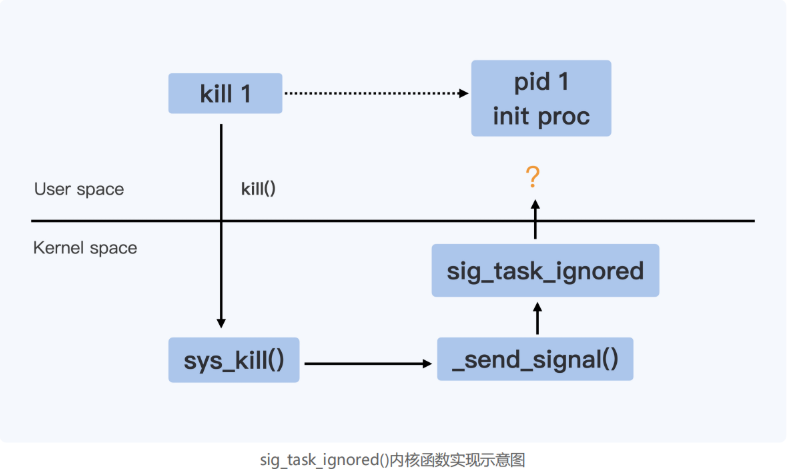
sig_task_ignored()代码如下，主要有三个判断条件，任意一个条件成立，都会返回true，代表应该忽略（Ignore）当前信号，我们主要看一下第二个if判断
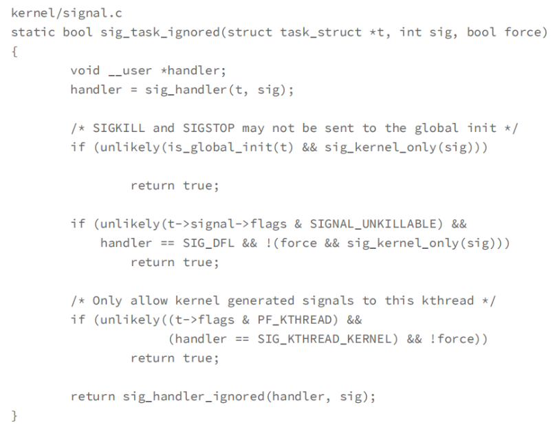
1 | t->signal->flags & SIGNAL_UNKILLABLE |
进程必须是SIGNAL_UNKILLABLE该条件才成立，
在每个Namespace中1号进程创建时，都会被打上SIGNAL_UNKILLABLE的标签
也就是说只要是容器内的1号进程，该条件一定成立
1 | handler == SIG_DFL |
如果用户进程没有针对本信号注册自己的handler处理函数，那么会有一个默认的handler程序
这个默认的handler就叫SIG_DFL
所以，总结一句话就是如果你进程没有针对本信号注册handler，那该条件就程序
ps：如果进程使用的是默认/缺省行为那该条件就成立
如果目标进程对-15信号注册了handler处理函数，那么该条件就为false
如果没有注册该条件就为true
1 | !(force && sig_kernel_only(sig) |
force结果的真假取决于发送信号的进程与接收信号的进程是否在同一个namespace里，
如果是那结果就为0，否则结果就为1
1 | sig_kernel_only(sig) |
- 只有信号为-9信号或者-19结果才true
使用方式
格式
1 | kill [-s sigspec | -n signum | -sigspec] pid | jobspec ... or kill -l [sigspec] |
显示当前系统可用信号
1 | kill -l |
指定信号的方法 :
信号的数字标识：1, 2, 9
信号完整名称：SIGHUP，sighup
信号的简写名称：HUP，hup
向进程发送信号：
按PID：
1 | kill -1 pid … |
按名称：killall 来自于psmisc包
1 | killall [-SIGNAL] comm… |
范例：查看HUP信号
1 | #许多服务的支持的reload操作，实际就是发送了HUP信号 |
范例：利用 0 信号实现进程的健康性检查
1 | [root@centos8 ~]#killall -0 ping |
按模式
1 | pkill [options] pattern |
范例：踢出指定终端，高版本内核无效
1 | [root@rocky ~]# pkill -t pts/1 |
范例: pkill和pgrep支持正则表达式
1 | [root@centos8 ~]#pkill '^p' |
范例: nginx服务的信号
1 | [root@centos8 ~]#man nginx |
范例：关掉指定端口的进程
1 | [root@ubuntu ~]# lsof -i:80 |
-9和-15信号
当我们使用kill pid时，实际相当于kill -15 pid。也就是说默认信号为15。使用kill -15时，系统会发送一个SIGTERM的信号给对应的程序。当程序接收到该信号后，具体要如何处理自己可以决定。这时候，应用程序可以选择：
立即停止程序
释放响应资源后停止程序
忽略该信号，继续执行程序
因为kill -15信号只是通知对应的进程要进行”安全、干净的退出”，程序接到信号之后，退出前一般会进行一些”准备工作”，如资源释放、临时文件清理等等，如果准备工作做完了，再进行程序的终止。
但是，如果在”准备工作”进行过程中，遇到阻塞或者其他问题导致无法成功，那么应用程序可以选择忽略该终止信号。
这也就是为什么我们有的时候使用kill命令是没办法”杀死”应用的原因，因为默认的kill信号是SIGTERM（15），而SIGTERM（15）的信号是可以被阻塞和忽略的。
和kill -15相比，kill -9就相对强硬得多，系统会发出SIGKILL信号，他要求接收到该信号的程序应该立即结束运行，不能被阻塞或者忽略。
所以，kill -9在执行时，应用程序是没有时间进行”准备工作”的，所以这通常会带来一些副作用，数据丢失或者终端无法恢复到正常状态等。
特权信号
进程收到信号后的三种反应
忽略（Ignore）: 就是对该信号不做任何处理，
捕获（Catch）：就是让用户进程可以注册自己针对这个信号的handler，一旦进程收到该信号后，就会触发handler的功能运行
默认/缺省行为（Default）：linux系统为每个信号都定义了默认要做的事情，我们可以通过man 7 signal来查看，对于大多数信号来说，我们都不需要捕获并注册自己的handler，使用默认的就好
两个特权信号
SIGKILL（-9）：强制杀死
SIGSTOP（-19）：暂停进程的运行，恢复运行需要发送-18信号
这两个特权信号特权就特权在：
无法被忽略
无法被捕获
因为这两信号是linux系统为内核和超级用户准备的特权，可以删除任意的进程，任何进程只要收到了这俩信号，只能执行缺省行为，任何进程收到了这俩信号都只能乖乖听话。至于SIGTERM（-15）信号，代表的是平滑关闭，该信号是可以被忽略或者说捕获的
四、作业管理
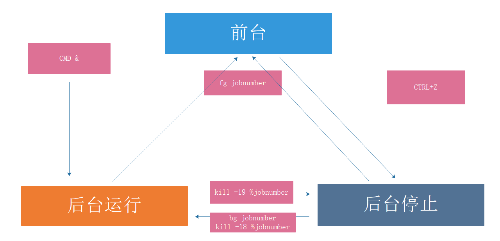
Linux的作业控制
前台作业：通过终端启动，且启动后一直占据终端
后台作业：可通过终端启动，但启动后即转入后台运行（释放终端）
让作业运行于后台
运行中的作业： Ctrl+z（变成stop态）
尚未启动的作业： COMMAND &
后台作业虽然被送往后台运行，但其依然与终端相关；退出终端，将关闭后台作业。如果希望送往后台后，剥离与终端的关系
nohup COMMAND &>/dev/null &
screen；COMMAND
tmux；COMMAND
后台运行的进程和终端关系
- 进程虽然放到了后台执行，但还是终端下的子进程
查看当前终端所有作业编号
1 | [root@ubuntu ~]# jobs |
作业控制
1 | fg [[%]JOB_NUM] 把指定的后台作业调回前台 |
范例：作业控制，让后台stop进程继续运行
1 | [root@ubuntu ~]# jobs |
范例: 后台运行的进程和终端关系
1 | #终端1运行后台进程 |
范例：将进程从前台运行（占用终端窗口，不会输出其他命令结果）变成后台运行（仍处于运行状态，但可以输出其他命令）
1 | [root@centos ~]#ping 10.0.0.183 |
范例: nohup（在后台运行，不会随着窗口的关闭而停止运行，而是将内容重定向到一个文件）
1 | [root@centos8 ~]#nohup ping 127.0.0.1 |
五、并行运行
利用后台执行，实现并行功能，即同时运行多个进程，提高效率
方法1：写脚本
1 | cat all.sh |
方法2
1 | (f1.sh&);(f2.sh&);(f3.sh&) |
方法3
1 | f1.sh&f2.sh&f3.sh& |
停止运行
1 | killall cmd |
多组命令实现并行并停止
1 | [root@centos8 ~]#{ ping -c3 127.1; ping 127.2; }& { ping -c3 127.3 ;ping 127.4;}& |
范例：网段检测
1 | [root@centos8 ~]#cat scanhost.sh |